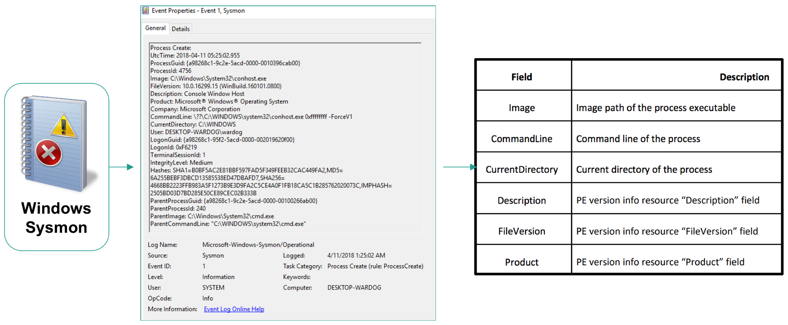

Data Documentation¶
Do you know what it is that you are collecting in you organization? if the answer is no or maybe, then you need to spend some time and resources documenting every single data source that you are onboarding or have already available for security analysts to work with. When I ask if you know what you are collecting, I am NOT ONLY asking if you know the name of the data source provider (i.e Security, Sysmon or PowerShell logs), but also the information behind every event log collected in your environment. This is NOT an impossible task, but might take some time and effort at the beginning depending on how many resources you allocate and the number of diverse data sources you are collecting. Remember that if you are working with commercial tools (i.e EDR solutions) that collect data for you, your vendor should be providing data dictionaries for every security event.
What is a Data Dictionary?¶
A Data Dictionary is a collection of names, definitions, and attributes about data elements that are being used or captured in a database, information system, or part of a research project.

Why?¶
Besides being best practices to document data being ingested, it is very important to know what information each event log produces while developing security analytics. Sometimes the focus is alot in the “process name” or “command line argument” or the “user name”. However, there are other fields that could provide more context to the analytic being developed. If you are not aware of other useful event fields in the data that you collect, you might be missing some opportunities to improve your analytic and detect additional patterns of behavior.
How?¶
You can take a sample of the event flowing through your pipeline in its raw format:
<Event xmlns="http://schemas.microsoft.com/win/2004/08/events/event">
<System>
<Provider Name="Microsoft-Windows-Sysmon" Guid="{5770385F-C22A-43E0-BF4C-06F5698FFBD9}" />
<EventID>1</EventID>
<Version>5</Version>
<Level>4</Level>
<Task>1</Task>
<Opcode>0</Opcode>
<Keywords>0x8000000000000000</Keywords>
<TimeCreated SystemTime="2019-06-12T00:48:53.300422700Z" />
<EventRecordID>6526518</EventRecordID>
<Correlation />
<Execution ProcessID="2312" ThreadID="3800" />
<Channel>Microsoft-Windows-Sysmon/Operational</Channel>
<Computer>DESKTOP-WARDOG.RIVENDELL.local</Computer>
<Security UserID="S-1-5-18" />
</System>
<EventData>
<Data Name="RuleName" />
<Data Name="UtcTime">2019-06-12 00:48:53.295</Data>
<Data Name="ProcessGuid">{A98268C1-4BF5-5D00-0000-00102A7B2B00}</Data>
<Data Name="ProcessId">6364</Data>
<Data Name="Image">C:\Windows\System32\wuauclt.exe</Data>
<Data Name="FileVersion">10.0.17134.1 (WinBuild.160101.0800)</Data>
<Data Name="Description">Windows Update</Data>
<Data Name="Product">Microsoft® Windows® Operating System</Data>
<Data Name="Company">Microsoft Corporation</Data>
<Data Name="OriginalFileName">wuauclt.exe</Data>
<Data Name="CommandLine">"C:\WINDOWS\system32\wuauclt.exe" /RunHandlerComServer</Data>
<Data Name="CurrentDirectory">C:\WINDOWS\system32\</Data>
<Data Name="User">NT AUTHORITY\SYSTEM</Data>
<Data Name="LogonGuid">{A98268C1-48F4-5D00-0000-0020E7030000}</Data>
<Data Name="LogonId">0x3e7</Data>
<Data Name="TerminalSessionId">0</Data>
<Data Name="IntegrityLevel">System</Data>
<Data Name="Hashes">IMPHASH=E799C2BD8BC66603D6DDC95F2DB31A18</Data>
<Data Name="ParentProcessGuid">{A98268C1-48F5-5D00-0000-00103C410100}</Data>
<Data Name="ParentProcessId">1040</Data>
<Data Name="ParentImage">C:\Windows\System32\svchost.exe</Data>
<Data Name="ParentCommandLine">C:\WINDOWS\system32\svchost.exe -k netsvcs -p</Data>
</EventData>
</Event>
Translate useful fields to a YAML file as shown here.
Take that YAML file and convert it to other formats such as Markdown. Having the data in YAML format allows you to programmatically use those dictionaries and integrate them with other tools.
When?¶
Depending on your priorities and the resources allocated to your team, you can either document every data source being collected all at once, or gradually document each data sources as you build analytics. For example, imagine you want to detect “WMI for lateral movement”, and you identify the following data sources as good candidates to provide some level of visibility over the adversarial technique:
Windows Security
Authentication events
Process creation events
Sysmon
Process creation events
You could then start documenting only the events identified above and start creating your own data wiki in your organization.
In this activity, hunters could build data dictionaries for each event log being collected in their environment or help data managers with the whole process. In my opinion, building data dictionaries helps tremendously to identify and explore new events that could help spark new ideas for new analytics.